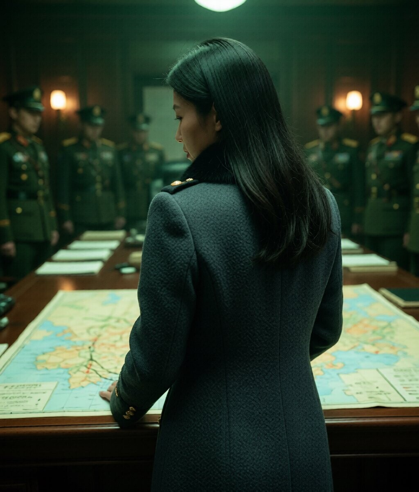
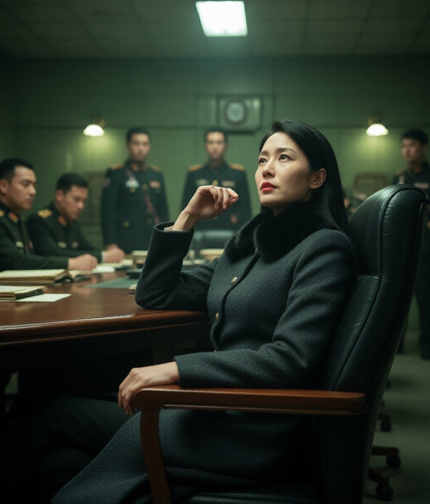
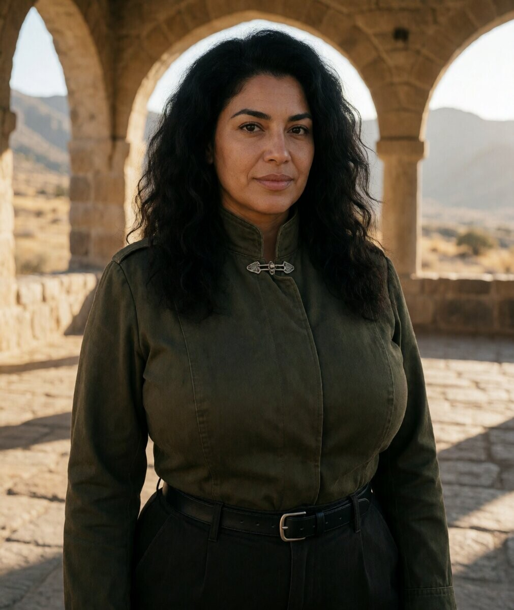
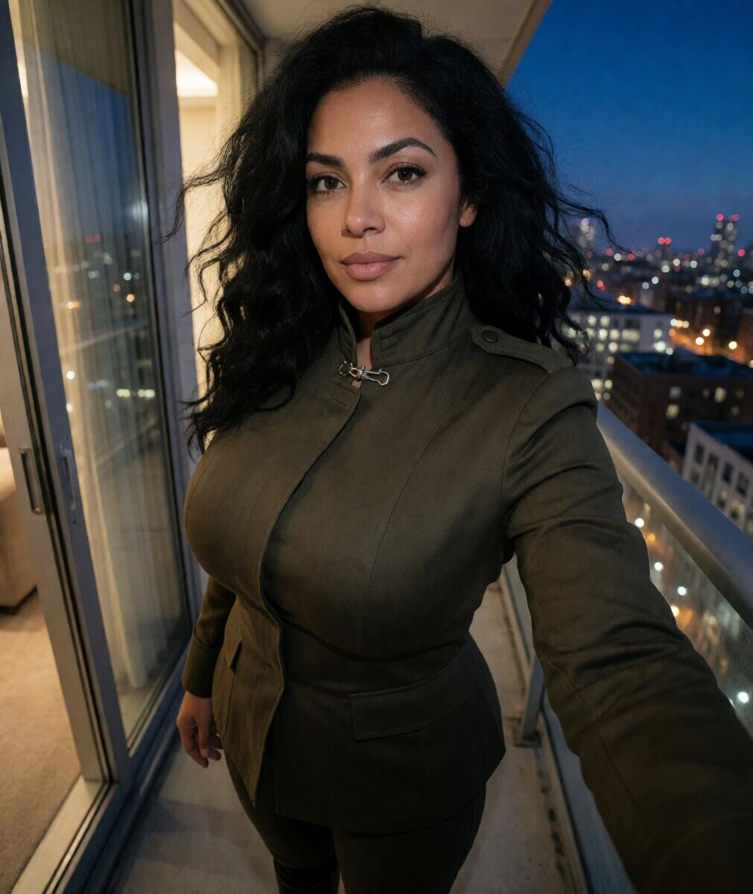
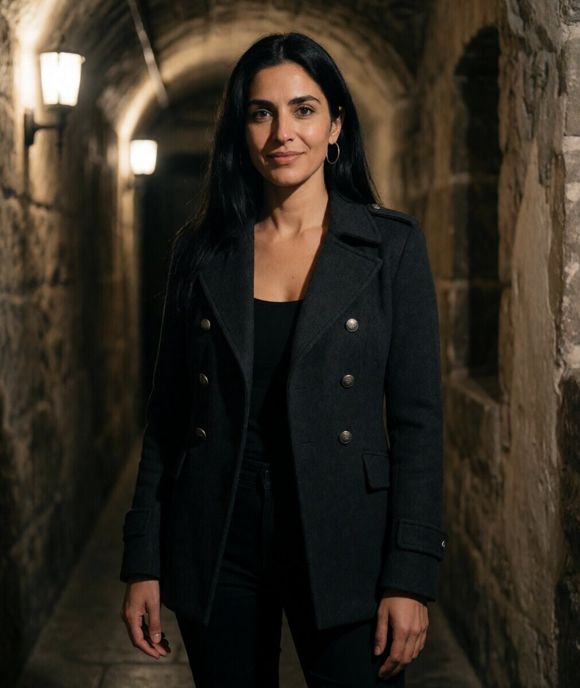
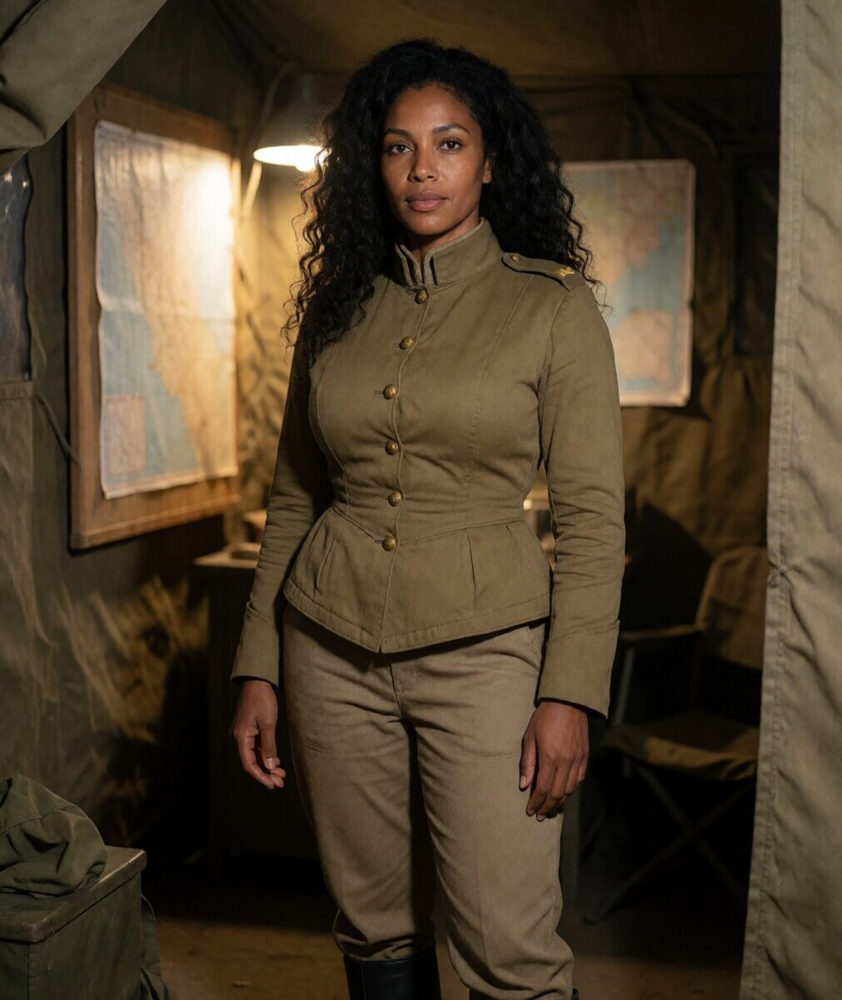
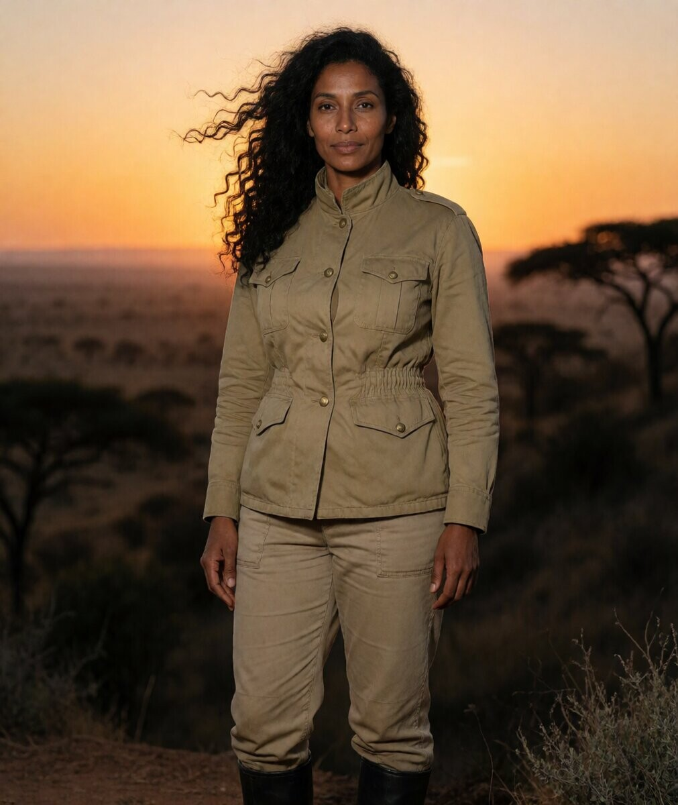

Kim Ye-rin
Élégance froide, pouvoir discret. Rouge à lèvres rouge, col de fourrure noire, corridor de marbre, salle de stratégie, terrain de parade au crépuscule.

Corridor de marbre

Salle de stratégie

Terrain de parade

Salle de stratégie — profil

Salle de stratégie — de dos

Salle de stratégie — assise

Marche, boulevard

Trois quart, épaule

Cour antique, pierre

Profil, vitre

Escalier, regard haut
Kim Ye-rin
Au bureau, dans la salle de commandement. Portraits officiels, style propagande. Manteau blanc, documents, cartes militaires.

Bureau, lecture

Carte militaire

Signature
Kim Ye-rin
La même femme, sans le manteau. Chemise blanche, pull, thé, parc, cuisine. Naturelle, détendue, humaine.

Canapé, thé

Balcon, golden hour

Fenêtre, repos

Parc, lecture

Cuisine
Shirin
Cheveux noirs ondulés, autorité discrète. Olive green, bureau de pierre, lumière chaude.

Bureau de pierre

Courtyard

Balcon, nuit
Yara
Cheveux lisses, sourire léger. Charcoal coat, toit de Beyrouth au crépuscule.

Toit de Beyrouth

Couloir, forteresse
Bureau, lecture
Amina
Boucles naturelles, long cou, regard perçant. Khaki désertique, golden hour.

Désert

Tente de commandement

Crête, coucher